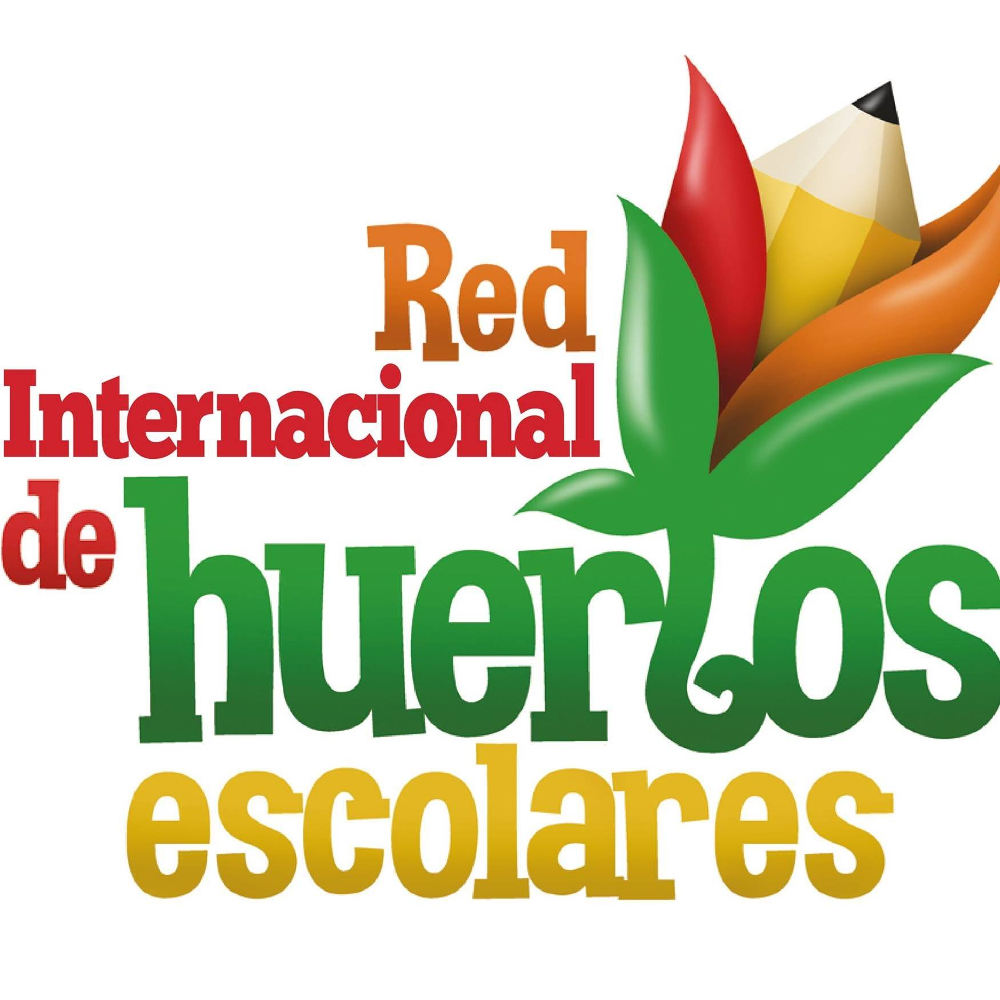
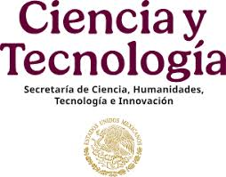

Gracias al compromiso y esfuerzo de cada persona involucrada, el Proyecto Gorrión se mantiene en constante crecimiento y logra sus metas. Su dedicación, talento y entusiasmo son el motor que hace posible que este proyecto siga avanzando y generando un impacto positivo en nuestra comunidad.

Responsable Técnico
Gestiona los aspectos legales y administrativos del proyecto, garantizando cumplimiento normativo y seguridad jurídica.
Representante Legal
Gestiona los aspectos legales y administrativos del proyecto, garantizando cumplimiento normativo y seguridad jurídica.
Responsable Administrativo
Coordina recursos y procesos administrativos, asegurando el buen funcionamiento y organización del proyecto.

Red Nacional
Plataforma colaborativa que identifica y visibiliza los huertos educativos en instituciones de educación superior en México.

Patrocinador
Agradecemos el apoyo de SECIHTI, que permite el desarrollo y éxito de nuestro proyecto.